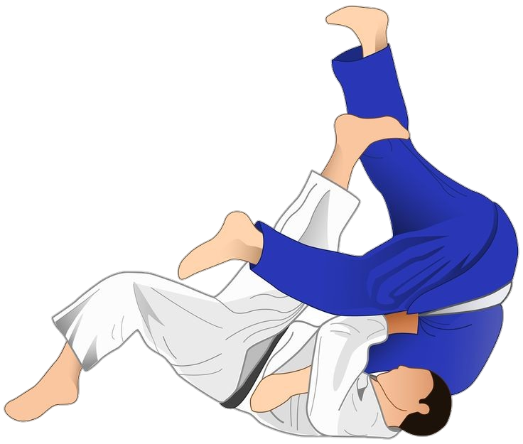

Herzlich Willkommen auf meiner Webseite!
Tauche ein in die faszinierende Welt des Judo,wo Tradition, Disziplin und Leidenschaft aufeinandertreffen. Judo ist mehr als nur ein Kampfsport; es ist eine Lebensphilosophie, die Respekt, Selbstbeherrschung und ständiges Lernen in den Mittelpunkt stellt.
